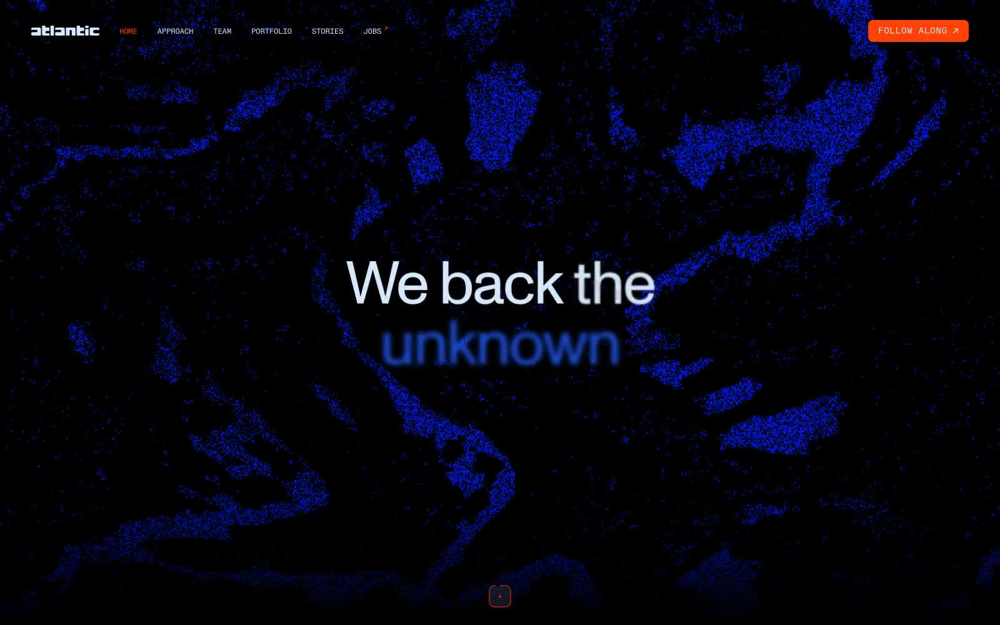

Atlantic.vc 的 Design.md 主题展示，围绕金融科技、暗色界面、数据仪表盘、数据分析组织页面。
Explore Atlantic.vc's dark Fintech design system: Deep Midnight #000000, Charcoal Canvas #0d0d0f colors, Monument, Mono typography, and DESIGN.md for AI agents.

#0d0d0f: #0d0d0f#000000: #000000#d8eaff: #d8eaff#1f58f2: #1f58f2#2b2f33: #2b2f33#232529: #232529#565657: #565657#6c757f: #6c757f#ff4105: #ff4105#565e66: #565e66#41464c: #41464c#efece6: #efece6display: Monobody: Monomono: Monohints: Mono